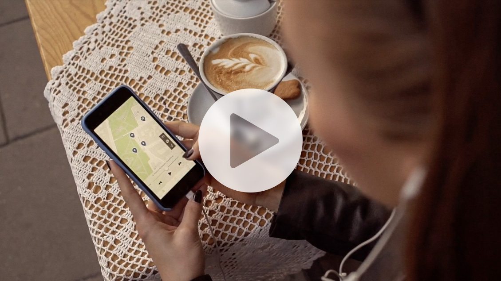

Chcesz pokazać swoje muzeum ciekawie i komfortowo, bez używania specjalnych urządzeń? Teraz to możliwe. Wystarczy wykupić naszą aplikację, a zwiedzający będą mogli ściągnąć darmową aplikację z Google Play™ lub App Store® i przekształcić swoje telefony w audioprzewodniki!
Aplikację muzealną oferujemy w trzech wariantach:
Umożliwia on zwiedzanie we własnym tempie. Na ekranie telefonu widzimy klawiaturę numeryczną i listę eksponatów. Aby usłyszeć komentarz wystarczy wpisać numer eksponatu lub wybrać go z listy i włączyć nagranie
Podobnie jak klawiatura numeryczna pozwala na zwiedzanie we własnym tempie. Nagrania uruchamiane są poprzez przyłożenie telefonu do specjalnej etykiety NFC umieszczonej na ekspozycji.
Oprócz klawiatury numerycznej istnieje możliwość uruchamiania komentarza w wybranych miejscach automatycznie. Aplikacja lokalizuje aktualne położenie zwiedzającego za pomocą specjalnych czujników, które włączają nagrania.

Audioprzewodnik w formie aplikacji na telefon to rozwiązanie, które umożliwia zwiedzającym zwiedzanie wykorzystując własne urządzenie i słuchawki. Instytucje, urzędy miast, gminy mogą na swojej stronie umieścić ikonę aplikacji i odnośnik do odpowiedniego sklepu (App Store dla aplikacji na telefony z systemem iOS, lub Google Play™ dla urządzeń z systemem Android).
Wystarczy pobrać aplikację na swój telefon i można rozpoczynać zwiedzanie. Przykładowa, darmowa aplikacja z wycieczką po Krakowie do pobrania przy użyciu linków poniżej.
Aplikacja działa w trybie ręcznym. Zwiedzający uruchamia nagrania wybierając je z listy, lub z mapy (niektóre miejscowości oferują mapę 3D), która jednocześnie pokazuje aktualną lokalizację zwiedzającego. Głos lektora poprowadzi turystę przez całą trasę wycieczki. Dzięki dokładnym instrukcjom nawigacyjnym na pewno się nie zgubi!
Poniżej przedstawiamy filmik obrazujący działanie aplikacji w terenie:
W razie pytań chętnie udzielimy odpowiedzi. Zapraszamy do kontaktu z naszymi specjalistami IT, oraz działem sprzedaży poprzez zakładkę Kontakt.